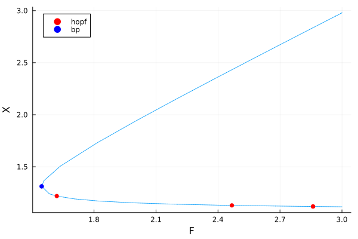
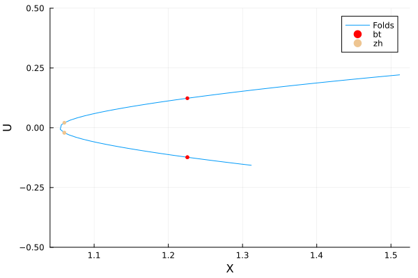
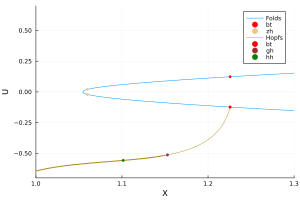
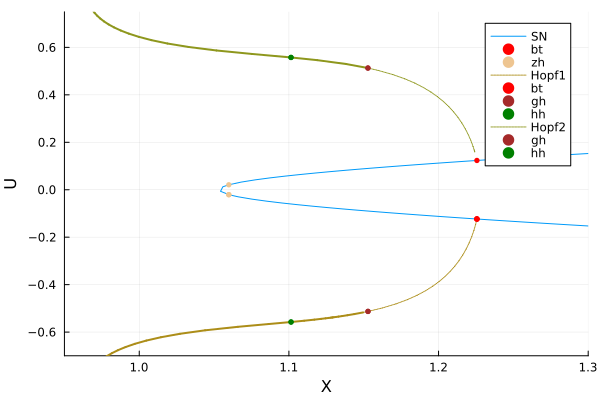
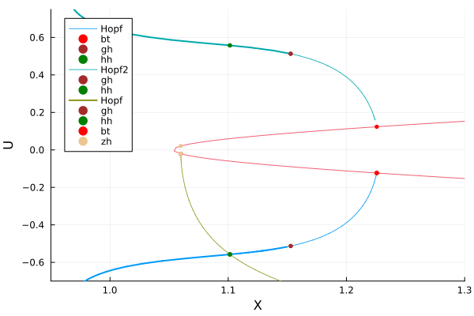
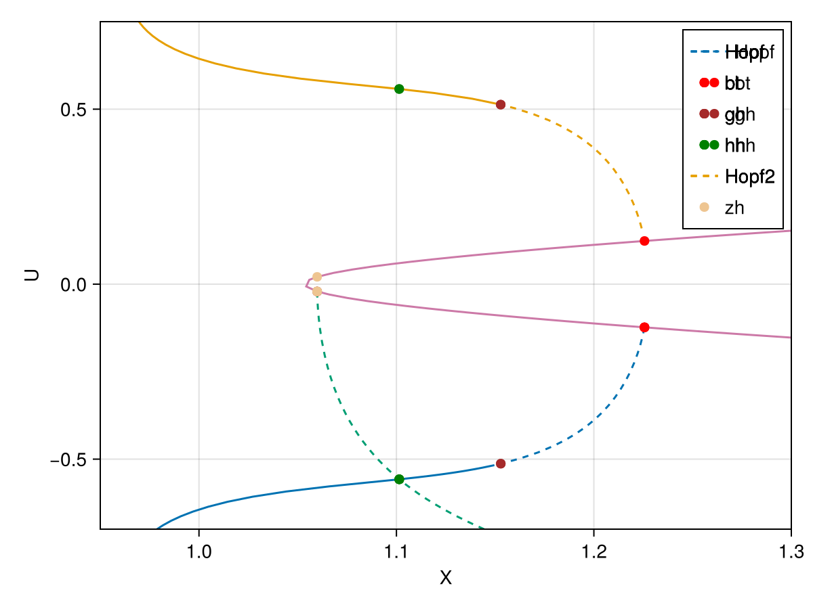

🟡 Extended Lorenz-84 model (codim 2 + BT/ZH aBS)
In this tutorial, we study the extended Lorenz-84 model which is also treated in MatCont [Kuznetsov]. This model is interesting because it features all codim 2 bifurcations of equilibria. It is thus convenient to test our algorithms.
After this tutorial, you will be able to
- detect codim 1 bifurcation Fold / Hopf / Branch point
- follow Fold / Hopf points and detect codim 2 bifurcation points
- branch from the codim 2 points to curves of Fold / Hopf points
The model is as follows
\[\left\{\begin{array}{l} \dot{X}=-Y^{2}-Z^{2}-\alpha X+\alpha F-\gamma U^{2} \\ \dot{Y}=X Y-\beta X Z-Y+G \\ \dot{Z}=\beta X Y+X Z-Z \\ \dot{U}=-\delta U+\gamma U X+T \end{array}\right.\tag{E}\]
We start with some imports:
using Revise, Plotsimport BifurcationKit as BKimport BifurcationKit: @opticProblem setting
We can now encode the vector field (E) in a function.
# vector fieldfunction Lor(u, p) (;α,β,γ,δ,G,F,T) = p X,Y,Z,U = u [ -Y^2 - Z^2 - α*X + α*F - γ*U^2, X*Y - β*X*Z - Y + G, β*X*Y + X*Z - Z, -δ*U + γ*U*X + T ]end# parameter valuesparlor = (α = 1//4, β = 1, G = .25, δ = 1.04, γ = 0.987, F = 1.7620532879639, T = .0001265)# initial conditionz0 = [2.9787004394953343, -0.03868302503393752, 0.058232737694740085, -0.02105288273117459]# bifurcation problemrecord_from_solution_Lor(x, p; k...) = (X = x[1], Y = x[2], Z = x[3], U = x[4])prob = BK.ODEBifProblem(Lor, z0, (parlor..., T=0.04, F=3.), (@optic _.F); record_from_solution = record_from_solution_Lor)Continuation and codim 1 bifurcations
Once the problem is set up, we can continue the state w.r.t. $F$ and detect codim 1 bifurcations. This is achieved as follows:
# continuation optionsopts_br = BK.ContinuationPar(p_min = -1.5, p_max = 3.0, ds = 0.002, dsmax = 0.15, # Optional: bisection options for locating bifurcations n_inversion = 6, # number of eigenvalues nev = 4)# compute the branch of solutionsbr = BK.continuation(prob, BK.PALC(), opts_br; normC = BK.norminf, bothside = true)scene = plot(br, plotfold = false, markersize = 4, legend = :topleft)
With detailed information:
br ┌─ Curve type: EquilibriumCont
├─ Number of points: 33
├─ Type of vectors: Vector{Float64}
├─ Parameter F starts at 3.0, ends at 3.0
├─ Algo: PALC [Secant]
└─ Special points:
- # 1, endpoint at F ≈ +3.00000000, step = 0
- # 2, hopf at F ≈ +2.85996783 ∈ (+2.85986480, +2.85996783), |δp|=1e-04, [converged], δ = ( 2, 2), step = 1
- # 3, hopf at F ≈ +2.46723305 ∈ (+2.46720734, +2.46723305), |δp|=3e-05, [converged], δ = (-2, -2), step = 3
- # 4, hopf at F ≈ +1.61975642 ∈ (+1.61959602, +1.61975642), |δp|=2e-04, [converged], δ = ( 2, 2), step = 9
- # 5, bp at F ≈ +1.54664839 ∈ (+1.54664837, +1.54664839), |δp|=1e-08, [converged], δ = (-1, 0), step = 11
- # 6, endpoint at F ≈ +3.00000000, step = 32
Continuation of Fold points
We follow the Fold points in the parameter plane $(T,F)$. We tell the solver to consider br.specialpoint[5] and continue it.
# function to record the current statesn_codim2 = BK.continuation(br, 5, (@optic _.T), BK.ContinuationPar(opts_br, p_max = 3.2, p_min = -0.1, dsmin=1e-5, ds = -0.001, dsmax = 0.005) ; normC = BK.norminf, # we save the different components for plotting record_from_solution = record_from_solution_Lor, )scene = plot(sn_codim2, vars=(:X, :U), branchlabel = "Folds", ylims=(-0.5, 0.5))
with detailed information
sn_codim2 ┌─ Curve type: FoldCont
├─ Number of points: 82
├─ Type of vectors: Vector{Float64}
├─ Parameters (:F, :T)
├─ Parameter T starts at 0.04, ends at -0.1
├─ Algo: PALC [Secant]
└─ Special points:
- # 1, bt at T ≈ +0.02094014 ∈ (+0.02094014, +0.02094020), |δp|=6e-08, [converged], δ = ( 0, 0), step = 12
- # 2, zh at T ≈ +0.00012644 ∈ (+0.00012644, +0.00012666), |δp|=2e-07, [converged], δ = ( 0, 0), step = 29
- # 3, zh at T ≈ -0.00012655 ∈ (-0.00012655, -0.00012644), |δp|=1e-07, [converged], δ = ( 0, 0), step = 32
- # 4, bt at T ≈ -0.02094041 ∈ (-0.02094041, -0.02093949), |δp|=9e-07, [converged], δ = ( 0, 0), step = 49
- # 5, endpoint at T ≈ -0.10000000, step = 81
For example, we can compute the following normal form
BK.get_normal_form(sn_codim2, 1)Bogdanov-Takens bifurcation point at (:F, :T) ≈ (1.4467165285461674, 0.020940139624102523).
Normal form (B, β1 + β2⋅B + b⋅A⋅B + a⋅A²)
Normal form coefficients:
a = 0.21442327431975242
b = 0.6065142321262045
You can call various predictors:
- predictor(::BogdanovTakens, ::Val{:HopfCurve}, ds)
- predictor(::BogdanovTakens, ::Val{:FoldCurve}, ds)
- predictor(::BogdanovTakens, ::Val{:HomoclinicCurve}, ds)
Continuation of Hopf points
We follow the Hopf points in the parameter plane $(T,F)$. We tell the solver to consider br.specialpoint[3] and continue it.
hp_codim2_1 = BK.continuation(br, 3, (@optic _.T), BK.ContinuationPar(opts_br, ds = -0.001, dsmax = 0.02, dsmin = 1e-4) ; normC = BK.norminf, # we save the different components for plotting record_from_solution = record_from_solution_Lor, # compute both sides of the initial condition bothside = true, )plot(sn_codim2, vars=(:X, :U), branchlabel = "Folds")plot!(hp_codim2_1, vars=(:X, :U), branchlabel = "Hopfs")ylims!(-0.7, 0.7); xlims!(1, 1.3)
hp_codim2_1 ┌─ Curve type: HopfCont
├─ Number of points: 429
├─ Type of vectors: Vector{Float64}
├─ Parameters (:F, :T)
├─ Parameter T starts at 0.020940169755193715, ends at -0.15356949274656473
├─ Algo: PALC [Secant]
└─ Special points:
- # 1, endpoint at T ≈ +0.02094017, step = 0
- # 2, bt at T ≈ +0.02094017 ∈ (+0.02094017, +0.02094017), |δp|=6e-11, [converged], δ = ( 0, 0), step = 0
- # 3, gh at T ≈ +0.05019751 ∈ (+0.05019655, +0.05019751), |δp|=1e-06, [converged], δ = ( 0, 0), step = 19
- # 4, hh at T ≈ +0.02627340 ∈ (+0.02627340, +0.02627528), |δp|=2e-06, [converged], δ = (-2, -2), step = 35
- # 5, endpoint at T ≈ -0.15372759, step = 429
For example, we can compute the following normal form
BK.get_normal_form(hp_codim2_1, 3)Bautin bifurcation point at (:F, :T) ≈ (2.3763590366726266, 0.050197513021585226).
ω = 0.6903670769045959
Second lyapunov coefficient l₂ = 0.15577531801389188
Normal form: i⋅ω⋅z + l₂⋅z⋅|z|⁴
Continuation of Hopf points from the Bogdanov-Takens point
When we computed the curve of Fold points, we detected a Bogdanov-Takens bifurcation. We can branch from it to get the curve of Hopf points. This is done as follows:
hp_from_bt = BK.continuation(sn_codim2, 4, BK.ContinuationPar(opts_br, ds = -0.001, dsmax = 0.02, dsmin = 1e-4) ; normC = BK.norminf, # detection of codim 2 bifurcations with bisection detect_codim2_bifurcation = 2, # we save the different components for plotting record_from_solution = record_from_solution_Lor, )plot(sn_codim2, vars=(:X, :U), branchlabel = "SN")plot!(hp_codim2_1, vars=(:X, :U), branchlabel = "Hopf1")plot!(hp_from_bt, vars=(:X, :U), branchlabel = "Hopf2")ylims!(-0.7, 0.75); xlims!(0.95, 1.3)
with detailed information
hp_from_bt ┌─ Curve type: HopfCont from BogdanovTakens bifurcation point.
├─ Number of points: 401
├─ Type of vectors: Vector{Float64}
├─ Parameters (:F, :T)
├─ Parameter T starts at -0.026824826846373738, ends at 0.15063717400502946
├─ Algo: PALC [Secant]
└─ Special points:
- # 1, gh at T ≈ -0.05018361 ∈ (-0.05022014, -0.05018361), |δp|=4e-05, [converged], δ = ( 0, 0), step = 23
- # 2, hh at T ≈ -0.02626030 ∈ (-0.02631231, -0.02626030), |δp|=5e-05, [converged], δ = (-2, -2), step = 26
- # 3, endpoint at T ≈ +0.15079813, step = 401
Continuation of Hopf points from the Zero-Hopf point
When we computed the curve of Fold points, we detected a Zero-Hopf bifurcation. We can branch from it to get the curve of Hopf points. This is done as follows:
hp_from_zh = BK.continuation(sn_codim2, 2, BK.ContinuationPar(opts_br, ds = 0.001, dsmax = 0.02) ; normC = BK.norminf, detect_codim2_bifurcation = 2, record_from_solution = record_from_solution_Lor, )plot(hp_codim2_1, vars=(:X, :U), branchlabel = "Hopf")plot!(hp_from_bt, vars=(:X, :U), branchlabel = "Hopf2")plot!(hp_from_zh, vars=(:X, :U), branchlabel = "Hopf", legend = :topleft)plot!(sn_codim2,vars=(:X, :U),)ylims!(-0.7,0.75); xlims!(0.95,1.3)
with detailed information
hp_from_zh ┌─ Curve type: HopfCont from ZeroHopf bifurcation point.
├─ Number of points: 401
├─ Type of vectors: Vector{Float64}
├─ Parameters (:F, :T)
├─ Parameter T starts at 0.00012643994894407685, ends at 0.6669634456430216
├─ Algo: PALC [Secant]
└─ Special points:
- # 1, gh at T ≈ +0.00012660 ∈ (+0.00012654, +0.00012660), |δp|=6e-08, [converged], δ = ( 0, 0), step = 1
- # 2, hh at T ≈ +0.02627444 ∈ (+0.02627324, +0.02627444), |δp|=1e-06, [converged], δ = ( 2, 2), step = 27
- # 3, endpoint at T ≈ +0.66778051, step = 401
Plotting with Makie.jl
using CairoMakief,ax = BK.plot(hp_codim2_1, vars=(:X, :U), branchlabel = "Hopf", dash_unstable_style = true)BK.plot!(ax, hp_from_bt, vars=(:X, :U), branchlabel = "Hopf2", dash_unstable_style = true)BK.plot!(ax, hp_from_zh, vars=(:X, :U), branchlabel = "Hopf", dash_unstable_style = true)BK.plot!(ax, sn_codim2,vars=(:X, :U), dash_unstable_style = true)Makie.ylims!(ax, -0.7,0.75); Makie.xlims!(ax, 0.95,1.3)f
References
- Kuznetsov
Kuznetsov, Yu A., H. G. E. Meijer, W. Govaerts, and B. Sautois. “Switching to Nonhyperbolic Cycles from Codim 2 Bifurcations of Equilibria in ODEs.” Physica D: Nonlinear Phenomena 237, no. 23 (December 2008): 3061–68.